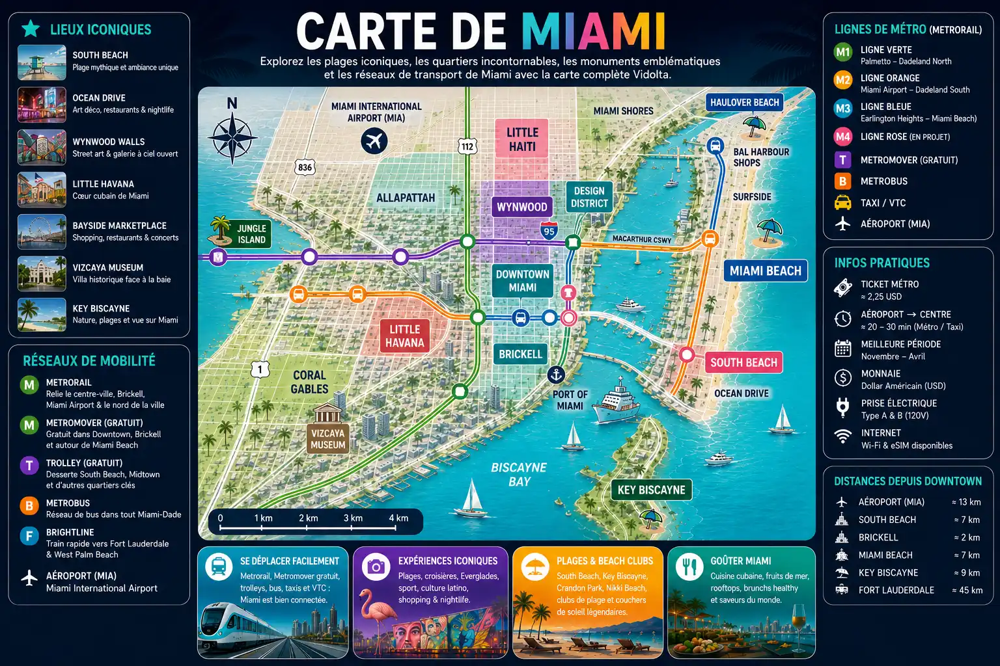

Miami Under The Sun
Explore Miami entre plages de sable blanc, quartiers Art déco, croisières en baie et expériences incontournables en Floride.
South Beach • Ocean Drive • Everglades • Biscayne Bay • Miami Beach
Plages mythiques, sable blanc, palmiers et ambiance emblématique de Miami.
Croisières, yachts, villas de stars et vues spectaculaires sur la skyline.
Découvre les façades colorées d’Ocean Drive et les célèbres fresques de Wynwood.
Beach clubs, rooftops, restaurants et ambiance festive toute l’année.

Entre plages paradisiaques, quartiers emblématiques, croisières, nature sauvage et expériences spectaculaires, Miami offre un concentré unique de soleil, de culture et d'aventure.

Avec son sable blanc, ses eaux turquoise et ses célèbres cabanes colorées, South Beach est l'image emblématique de Miami et l'une des plages les plus célèbres au monde.

Palmiers, hôtels Art déco, voitures de collection et ambiance festive font d'Ocean Drive l'une des avenues les plus iconiques des États-Unis.

Ancien quartier industriel devenu temple du street art, Wynwood rassemble certaines des fresques urbaines les plus impressionnantes au monde.
Voir les billets →
Découvre l'âme cubaine de Miami entre musique latino, cigares artisanaux, cafés traditionnels et ambiance chaleureuse au cœur de Calle Ocho.

Pars à la découverte des célèbres marécages de Floride à bord d'un hydroglisseur et observe alligators, oiseaux exotiques et paysages uniques.
Réserver l'excursion →
Navigue dans la baie de Miami et admire la skyline, Star Island et les célèbres villas de millionnaires depuis l'eau.
Réserver la croisière →
Survole South Beach, Biscayne Bay, les îles privées et les eaux turquoise de Floride pour découvrir Miami sous un angle spectaculaire.
Réserver le vol →
Découvre la baie de Miami à toute vitesse lors d'une excursion en hors-bord offrant sensations fortes et vues exceptionnelles sur la skyline.
Réserver l'aventure →Entre le Metromover gratuit, les vélos de Miami Beach, les applications de transport et les transferts depuis l'aéroport, se déplacer à Miami est simple et permet de profiter pleinement de la ville et de son littoral.
Le Metromover relie Downtown Miami, Brickell et le quartier financier grâce à un métro aérien automatique offrant de belles vues sur la ville.
Explorer →Profite d'une connexion mobile dès ton arrivée pour utiliser les cartes, réserver tes activités et te déplacer facilement dans toute la Floride.
Explorer →Parcours Ocean Drive, South Beach et les promenades du front de mer à vélo pour profiter du soleil et découvrir Miami à ton rythme.
Louer un vélo →Commence ton aventure à Miami par un transfert confortable entre l'aéroport international de Miami et ton hébergement afin de rejoindre rapidement South Beach, Downtown ou Brickell.
Réserver le transfert →Entre les plages mythiques de Miami Beach, les gratte-ciels modernes de Brickell et les quartiers plus paisibles du littoral, chaque secteur offre une façon différente de découvrir Miami.
Le quartier le plus emblématique de Miami. Idéal pour un premier séjour grâce à ses plages, ses hôtels Art déco, Ocean Drive et son ambiance animée de jour comme de nuit.
Le centre financier moderne de Miami. Entre rooftops, restaurants élégants, hôtels haut de gamme et gratte-ciels impressionnants, Brickell séduit les voyageurs en quête d'une ambiance urbaine premium.
À proximité du Bayside Marketplace, du port et du Metromover, Downtown constitue une excellente base pour explorer la ville tout en profitant de vues spectaculaires sur Biscayne Bay.
À seulement quelques minutes du centre-ville, Key Biscayne offre de magnifiques plages, des espaces naturels préservés et une ambiance beaucoup plus calme que Miami Beach.
Situé au nord de Miami Beach, Sunny Isles séduit par ses longues plages de sable fin, ses hôtels en bord de mer et son atmosphère plus paisible. Une excellente option pour les voyageurs recherchant détente et confort.
Entre cuisine cubaine, fruits de mer emblématiques, rooftops élégants et ambiance latino, Miami regorge d'adresses incontournables pour découvrir toute la diversité culinaire de la Floride.
Véritable institution de Miami Beach depuis 1913, Joe's Stone Crab est célèbre pour ses crabes de pierre et fait partie des restaurants les plus emblématiques de la ville.
Découvrir →Découvre la culture cubaine de Miami à travers une visite gourmande de Little Havana entre cafés cubains, spécialités locales, musique latino et traditions authentiques.
Réserver la visite →Dîner, cocktails et spectacle latino se mêlent dans l'une des expériences les plus emblématiques de Miami Beach. Une soirée festive au cœur d'Ocean Drive.
Réserver la soirée →Face à Biscayne Bay, Bayside rassemble de nombreux restaurants avec vue sur la marina. L'endroit idéal pour déjeuner ou dîner dans une ambiance animée au bord de l'eau.
Le quartier moderne de Miami regroupe certains des meilleurs steakhouses, rooftops et restaurants gastronomiques de la ville. Une destination incontournable pour une soirée élégante.
Entre football, NBA, NFL, baseball et Formule 1, Miami est devenue l'une des grandes capitales sportives des États-Unis. Des matchs de Messi aux grands rendez-vous internationaux, les passionnés de sport trouveront toujours un événement à vivre.

Depuis l'arrivée de Lionel Messi, l'Inter Miami est devenu l'une des équipes les plus suivies au monde. Assister à un match permet de découvrir l'ambiance unique du football version Floride.
Voir les billets →Triple champion NBA, le Miami Heat évolue au cœur de Downtown Miami. Une expérience incontournable pour découvrir l'ambiance spectaculaire du basketball américain.
Voir les billets →Les Dolphins font partie des franchises historiques de la NFL. Assister à un match au Hard Rock Stadium est une immersion totale dans la culture sportive américaine.
Voir les billets →Découvre le baseball américain au LoanDepot Park, l'un des stades les plus modernes du pays. Une expérience idéale pour vivre l'atmosphère typique des grands matchs américains.
Voir les billets →Miami accueillera plusieurs rencontres de la Coupe du Monde 2026 au Hard Rock Stadium. Une occasion unique de vivre l'un des plus grands événements sportifs de la planète dans l'ambiance de la Floride.
Voir les billets →Entre plages mythiques, art urbain, culture latino et skyline moderne, chaque quartier de Miami offre une ambiance unique et une façon différente de découvrir la ville.

Le quartier le plus emblématique de Miami avec ses plages de sable fin, ses hôtels Art déco, Ocean Drive et son ambiance animée du matin jusqu'au bout de la nuit.
Le cœur artistique de Miami. Célèbre pour ses fresques monumentales, ses galeries, ses cafés branchés et son atmosphère créative unique.
Plonge dans la culture cubaine entre cafés traditionnels, musique live, cigares, dominos et spécialités locales dans une ambiance chaleureuse et authentique.
Le quartier moderne de Miami. Entre gratte-ciels, rooftops élégants, restaurants haut de gamme et vie nocturne sophistiquée, Brickell représente le visage contemporain de la ville.
Au cœur de l'action, Downtown rassemble musées, centres culturels, Bayside Marketplace et magnifiques vues sur Biscayne Bay.
À quelques minutes seulement du centre-ville, Key Biscayne offre des plages préservées, des pistes cyclables, des parcs naturels et une ambiance beaucoup plus paisible.
Entre séries cultes, films légendaires, jeux vidéo et vie nocturne iconique, Miami a construit une image unique dans la culture populaire mondiale. Une façon originale de découvrir la ville à travers les lieux qui ont marqué plusieurs générations.

Diffusée dans les années 1980, Miami Vice a popularisé les voitures de sport, les costumes pastel, les bateaux rapides et l'ambiance glamour de Miami Beach. La série a profondément marqué l'image moderne de la ville.
Le film culte avec Al Pacino a contribué à construire le mythe de Miami dans l'imaginaire collectif. Plusieurs lieux emblématiques de la ville rappellent encore aujourd'hui l'univers de Tony Montana.
La célèbre série mettant en scène le plus célèbre expert médico-légal de Miami a utilisé de nombreux décors inspirés de la ville, renforçant encore son image dans la culture populaire.
Les aventures explosives de Mike Lowrey et Marcus Burnett ont offert certaines des plus belles scènes d'action tournées à Miami entre plages, autoroutes et gratte-ciels.
Inspiré directement de Miami, Vice City est devenu l'un des jeux vidéo les plus emblématiques de tous les temps avec ses néons, ses palmiers et son atmosphère rétro unique.
Entre danseurs, musique latino, cocktails et ambiance festive, Mango's Tropical Cafe est devenu l'un des lieux les plus emblématiques d'Ocean Drive. Une expérience qui résume parfaitement l'énergie de Miami après le coucher du soleil.
Réserver la soirée →
Située à l'extrémité des Florida Keys, Key West séduit par ses maisons colorées, son ambiance tropicale, ses couchers de soleil légendaires et son célèbre Southernmost Point, le point le plus au sud des États-Unis continentaux.
Réserver l'excursion →Les Florida Keys abritent certains des plus beaux récifs coralliens des États-Unis. À Key Largo, snorkeling, eaux cristallines et faune marine offrent une immersion spectaculaire dans le sanctuaire marin de Floride.
Réserver l'activité →À l'ouest de Miami, les Everglades dévoilent un écosystème unique au monde. Hydroglisseurs, alligators, oiseaux exotiques et vastes marécages offrent une expérience incontournable pour découvrir la Floride sauvage.
Réserver l'excursion →Surnommée la « Venise de Floride », Fort Lauderdale est réputée pour ses canaux, ses marinas luxueuses, ses plages et ses magnifiques demeures bordant les voies navigables.
Découvrir Fort Lauderdale →Depuis Miami, rejoins les Bahamas en quelques heures seulement. L'île de Bimini offre plages paradisiaques, eaux turquoise et atmosphère caribéenne pour une escapade exceptionnelle à la journée.
Réserver l'excursion →Miami combine plages paradisiaques, culture latino, art urbain et ambiance tropicale unique aux États-Unis.
South Beach, Little Havana, Wynwood, Brickell et les Florida Keys offrent des expériences très différentes dans une seule destination.
Le Metromover gratuit, les applications de transport et la voiture permettent de rejoindre facilement les différents quartiers et plages de la ville.
Cuisine cubaine, fruits de mer, rooftops élégants et restaurants en bord de mer font partie des expériences culinaires incontournables de Miami.
South Beach, les Everglades, Biscayne Bay, Wynwood, Little Havana et les Florida Keys figurent parmi les expériences à ne pas manquer.